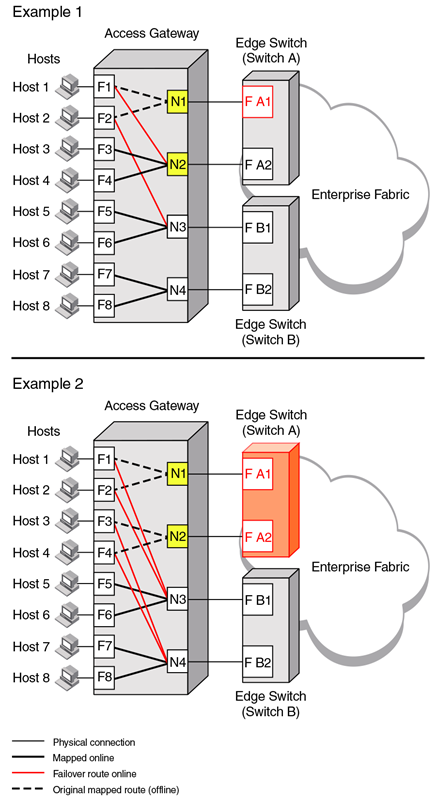

Failover example
The following example shows the failover sequence of events in a scenario where two fabric ports go offline, one after the other. Note that this example assumes that no preferred secondary N_Port is set for any of the F_Ports.
- First, the Edge switch F_A1 port goes offline, as shown in Example 1 in the following figure, causing the corresponding Access Gateway N_1 port to be disabled.
The ports mapped to N_1 fail over; F_1 fails over to N_2 and F_2 fails over to N_3.
- Next, the F_A2 port goes offline, as shown in Example 2 in the following figure, causing the corresponding Access Gateway N_2 port to be disabled.
The ports mapped to N_2 (F_1, F_3, and F_4) fail over to N_3 and N_4. Note that the F_Ports are evenly distributed to the remaining online N_Ports and that the F_2 port did not participate in the failover event.

Figure 11. Failover behavior